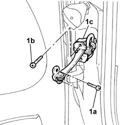
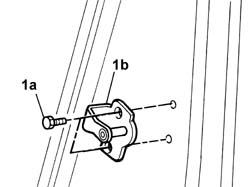
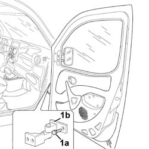
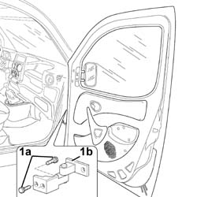
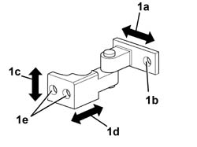

7005A14 front side door - adjust centering and moulding - includes adaptation of hinges and seals on door compartment
- Path
- Procedures > 70 FITTINGS > 7005 PASSENGER COMPARTMENT FRONT SIDE DOORS > 7005A front side door assembly > 7005A14 front side door - adjust centering and moulding - includes adaptation of hinges and seals on door compartment
- Kind
- repair procedure (removal / refitting; the operation number is the code)
- Applies to
- all engines; all production periods
- Interactive page
- https://sloeber94.github.io/elrnDB-fDbl/en/#/2584985
Applies to: all engines; all production periods
Op. 5570T90 FRONT SPEAKER (ONE), LEFT OR RIGHT - R.R
1. Slacken the bolts (1a), door side, and (1b), bodywork side, of the door check strap (1c).

Applies to: all engines; all production periods
To adapt the door transversally to the door seal, carry out the operations below.
1. Slacken the bolts (1a) securing the door striker (1b).

Applies to: all engines; all production periods
1. Slacken the bolts (1a), door side, securing the door hinge (1b).

Applies to: all engines; all production periods
On completion of adjustment, tighten the door hinge bolts to torque.
 | Fastening | Component | Ø | Value (daNm) |
|---|---|---|---|---|
- | Bolt | FRONT SIDE DOOR HINGES | M8 | 3.2 |
To adjust the door in the vertical and longitudinal directions, carry out the operations described below.
1. Slacken the bolts (1a), bodywork side, securing the door hinge (1b).

Applies to: all engines; all production periods
On completion of adjustment, tighten the door hinge bolts to torque.
| Fastening | Component | Ø | Value (daNm) |
|---|---|---|---|---|
- | Bolt | FRONT SIDE DOOR HINGES | M8 | 3.2 |
1. The figure shows the possible movements of the hinge for the transversal adaptation of the door to the door seal (1a), via the slotted hole (1b), for adjustment in the vertical direction (1c) and longitudinal direction (1d) through the slotted holes (1e).

Applies to: all engines; all production periods
At the end of each adjustment, tighten the door check strap bolts to torque.
| Fastening | Component | Ø | Value (daNm) |
|---|---|---|---|---|
1a | Bolt | FRONT DOOR OPENING LIMITER | M6 | (door) 1.2 |
| Fastening | Component | Ø | Value (daNm) |
|---|---|---|---|---|
1a | Bolt | FRONT DOOR OPENING LIMITER | M6 | (bodyshell) 1.2 |